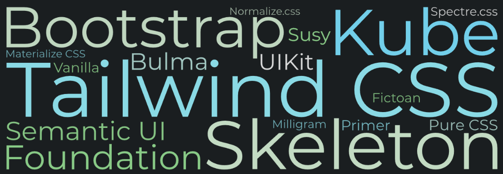

Tailwind CSS
Presentation
Презентация на тему веб-фреймворка Tailwind, подготовленная для лабораторной №12 по ЭВТ
tailwindcss
This is an «utility-first» CSS-framework
Tailwind CSS — это утилитарный CSS-фреймворк с открытым исходным кодом, созданный для ускорения и упрощения процесса разработки пользовательских интерфейсов
«Utility-first» philosophy
“Tailwind перевернул традиционное представление о CSS, предлагая не набор заранее стилизованных компонентов, а инструментарий для построения любого дизайна с нуля”
Tailwind перевернул традиционное представление о CSS, предлагая не набор заранее стилизованных компонентов, а инструментарий для построения любого дизайна с нуля. За несколько лет фреймворк получил широкую популярность в сообществе разработчиков
Get Tailwind #1
Install Tailwind CSS
npm install tailwindcss @tailwindcss/cli
Самый простой способ начать работу с Tailwind - это установить его через Tailwind CLI (Node.js). Для этого пишем команду npm install tailwindcss @tailwindcss/cli
Get Tailwind #2
Import Tailwind in your CSS
Get Tailwind #3
Start the Tailwind CLI build process
npx @tailwindcss/cli -i ./src/input.css -o ./src/output.css --watch
Затем нужно подключить Tailwind через npx @tailwindcss/cli -i ./src/input.css -o ./src/output.css --watch
Get Tailwind #4
Start using Tailwind in your HTML
Code examples
Tailwind использует короткие имена классов, обозначающие конкретные CSS-свойства. Вот пример создания кнопки с использованием Tailwind-свойств: здесь p-4 – устанавливает внутренний отступ, text-center – выравнивание текста по центру, bg-blue-500 – задаёт базовый синий фон, hover:bg-blue-700 – изменяет цвет фона при наведении, text-white – цвет текста белый, font-bold – жирное начертание шрифта, py-2 px-4 – вертикальные и горизонтальные отступы, rounded – скруглённые углы
Code examples
Есть также и продвинутые свойства. Вот пример создания блока, здесь отступы увеличиваются на устройствах с большими экранами
Code examples
И вот пример создания ссылки. Здесь используются классы для разных состояний (hover, focus и т.д.)
Documentation
See more in the official documentation >>>
Strengths and weaknesses
Гибкость и модульность
Ускорение разработки
Режим Just-In-Time
Лёгкая интеграция
Крутая кривая обучения
Раздутость HTML-разметки
Отсутствие готовых компонентов
Tailwind обладает разными преимуществами и недостатками. Преимущества: Гибкость и модульность - использование маленьких классов для создания уникальных дизайнов позволяет быстро изменять и настраивать стили без необходимости писать много кастомного CSS. Ускорение разработки - Благодаря заранее определённым утилитарным классам, можно быстро создавать и изменять компоненты интерфейса. Режим Just-In-Time (JIT) - С введением JIT Tailwind генерирует только те стили, которые используются в проекте, что позволяет значительно уменьшить размер итогового CSS-файла и улучшить производительность. Лёгкая интеграция - Tailwind можно использовать вместе с любыми JavaScript-фреймворками (React, Vue, Angular), а также в статических проектах. Недостатки: Крутая кривая обучения - Для разработчиков, привыкших к классическому подходу к CSS или компонентным библиотекам, использование утилитарных классов может сначала показаться непривычным. Раздутость HTML-разметки - Использование большого количества утилитарных классов непосредственно в HTML может привести к тому, что код будет выглядеть менее чистым и сложнее поддерживаться. Отсутствие готовых компонентов - В отличие от фреймворков типа Bootstrap, Tailwind не предоставляет готовых компонентов, таких как модальные окна или карусели
Tailwind vs Bootstrap
Tailwind
Bootstrap
Утилитарный подход
Готовые компоненты
Высокая
Ограниченная кастомизация
Благодаря JIT весит меньше
Больше стилей - весит больше
Можно сравнить Tailwind с его основным конкуретном среди фреймворков для веб-разработки - фреймворком Bootstrap. Tailwind CSS основан на утилитарном подходе, где каждая утилита отвечает за одно конкретное свойство стиля. Это позволяет создавать кастомные дизайны, комбинируя небольшие классы. Bootstrap предлагает готовые компоненты и классы для создания стандартного интерфейса. Подход "компонент-ориентированный" позволяет быстро собрать прототип, но может ограничивать гибкость дизайна. Итоговый выбор фреймворка зависит от конкретных потребностей проекта
Thanks for the attention!

Таким образом, Tailwind является хорошим фреймворком для упрощения и ускорения веб-разработки. Спасибо за внимание!